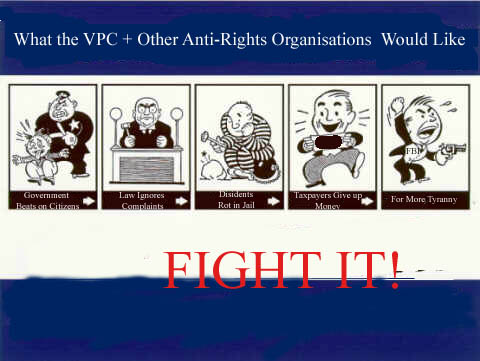

<a href="http://adforce.imgis.com/?adlink|2.0|2|129828|1|1|ADFORCE;loc=300;" target=_top><a href="http://adforce.imgis.com/?adlink|2.0|2|129828|1|1|ADFORCE;loc=300;" target=_top><img src="http://adforce.imgis.com/?adserv|2.0|2|129828|1|1|ADFORCE;loc=300;" border=0 width=468 height=60 alt="Netfirms Network"></a>
Gone are
the lies
the false statistics
the propagandist bullshit
the multiple asses of Rosie Odonnel
If you take my guns , I still have my computer. VPC just got shot in the head. Its really funny how this site tried to pose as an objective source when it is the same as handguncontrol.org. I think its kind of fucking stupid actually. - D0main Hijax
Mail

Some good links to get informed on the issues.
http://www.handguncontrol.net/
http://www.eff.org/
http://nra.org/